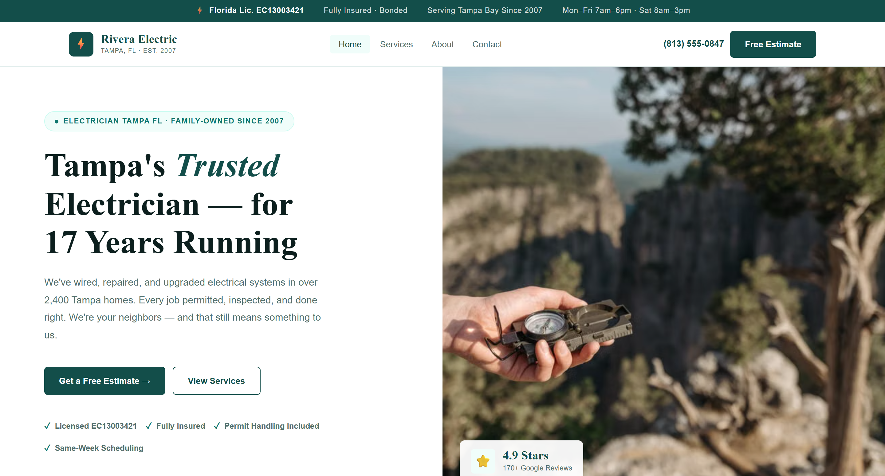

Electricians ranking in the top 3 Google Maps positions receive 3-4 times the call volume of electricians who only appear in organic results below the map. That gap isn't about who does better work, it's about who's easier to find in the ten seconds it takes someone to decide who to call.
Electrical work splits into two very different searches: the emergency (a dead panel, a burning smell, sparking outlet) and the planned project (a rewire, an EV charger, a panel upgrade). Both funnel through Google, and both are won or lost on the same handful of signals.
Key Takeaways
- Top-3 Map Pack electricians get 3-4x the call volume of organic-only listings.
- Electricians need a median of just 56 reviews to be competitive, one of the more accessible trade categories (Local Falcon, 2025).
- Google's own guidance: complete, accurate profiles are more likely to show up in local search results at all.
What Actually Drives Electrician Rankings?
Three signals do most of the work: Google Business Profile completeness, review count and recency, and whether your website has a dedicated page for the specific service someone searched. Everything past these three matters far less until they're solid.
In 2026, Google's own guidance states plainly that businesses with complete and accurate information are more likely to show up in local search results, and that inaccurate info can keep a profile from appearing at all (Google Business Profile Help). That's the floor, not a ranking bonus.
How Many Reviews Does an Electrician Actually Need?
Electricians need a median of just 56 reviews to be competitive in most markets, one of the most accessible trade categories in an analysis of 50.4 million local search results across nearly 2,000 business categories (Local Falcon, 2025). That's a genuinely reachable number for a business asking consistently after every job.
Recency beats total count. A steady 3-4 new reviews every month outranks a competitor sitting on a larger but stagnant total from two years ago. The ask matters more than the volume: a direct request right after the job, not a generic follow-up email days later, is what actually produces the pace that keeps a profile looking active.
Why Does Every Electrical Service Need Its Own Page?
A homepage listing "panel upgrades, rewiring, EV chargers, troubleshooting" in one paragraph doesn't rank for any of those searches individually. Google serves the most relevant page it can find, and a page built specifically around "EV charger installation" will consistently beat a homepage that mentions it in passing.
At minimum: panel upgrades, rewiring, EV charger installation, lighting installation, and troubleshooting/repairs each deserve a dedicated page with real detail, not a template paragraph. If you serve multiple suburbs, service-area pages compound this further, each one giving Google a specific, indexable answer to a specific, local search.
What Should an Electrician's Website Actually Include?
Speed and a visible phone number matter more than design polish. In 2026, Google's own research, "The Need for Mobile Speed," found that 53% of mobile visitors abandon a site that takes more than three seconds to load (Marketing Dive, reporting on Google's study). For a homeowner searching mid-emergency, that three-second window is the entire opportunity.
Beyond speed, the hero section of the homepage needs a clickable phone number, a specific credibility marker (years in business, license number, review count), and a clear statement of service area. What it shouldn't have: stock photos of generic outlets, a vague tagline, or a contact form as the only way to reach you.

A CopperBuilds electrician build: phone number, license number, and review rating all above the fold.
What Local Citations Actually Do for an Electrician?
A citation is any mention of your business name, address, and phone number on another site, Yelp, Angi, your state licensing board, your local Chamber of Commerce. Consistency across every listing is what tells Google your business is real and located where you say it is.
Electricians carry a specific citation opportunity most other trades don't: state licensing board directories. A listing there is both a citation and a trust signal, since it's a third-party government source confirming you're actually licensed to do the work.
Should Electricians Use Paid Ads Alongside SEO?
Google Local Services Ads are worth running alongside organic SEO, not instead of it. Unlike regular pay-per-click ads, LSAs charge per verified lead, not per click, and come with the "Google Guaranteed" badge that signals Google has vetted your license, insurance, and background.
The practical split: LSAs cover emergency call volume immediately while GBP and website rankings build in the background over the following months. Once organic traffic is generating consistent leads on its own, ad spend can scale back without losing the call volume, because the organic side is now carrying weight it wasn't before.
What Technical Basics Does an Electrician's Site Need?
Beyond the ranking-factor fundamentals, three technical elements make the difference between a site Google can fully understand and one it has to guess at. HTTPS is a baseline trust and ranking signal at this point, not optional, if your site still shows "Not Secure" in the browser, fix that before anything else here. Site architecture matters too: every service and service-area page should be reachable within two or three clicks from the homepage, not buried in a menu Google's crawler has to work to find. Electrician (LocalBusiness) schema, structured data marking your business type, address, hours, and service area, gives Google information it would otherwise have to infer from page text alone.
None of this replaces GBP completeness and reviews as the primary ranking drivers, but a technically clean site removes friction Google would otherwise have to work around to rank you at all.
Does Off-Page Activity Matter for an Electrician's SEO?
Backlinks, other websites linking to yours, still factor into how Google judges a site's authority, though they matter less for a local electrician than the on-page and GBP fundamentals do. The realistic sources for a local electrical business: your state licensing board directory, supplier or manufacturer "certified installer" pages if you carry a recognized brand, and your local Chamber of Commerce.
Avoid paid link schemes promising bulk backlinks. Google's systems are built to discount exactly that kind of low-quality mass linking, and it can do more harm than good to a newer site's trust signals. A handful of real, relevant links from sources connected to your actual business outperforms dozens of purchased ones.
What Mistakes Are Costing Electricians Rankings?
A handful of mistakes show up repeatedly in electrician site and profile audits.
Wrong primary GBP category. "Electrical Repair Service" instead of "Electrician" as the primary category narrows which searches you're eligible to appear for. Electrician is the correct primary category for most full-service residential electricians.
No service area listed beyond the home city. "Serving the greater Tampa area" in a footer doesn't rank for searches in a specific neighboring suburb. Listing every suburb explicitly in GBP service area settings is what actually earns visibility there.
Reviews going unanswered. An unanswered negative review sits visibly on the profile for every future visitor to read. A calm, professional response, even to a fair complaint, does more for trust than the negative review does damage.
No tracking set up. Without Google Search Console and GBP Insights running from day one, there's no way to tell whether a change to the site or profile actually helped. Set both up before making any other change on this list.
Do Electricians Need to Worry About AI Search?
In December 2025, Ahrefs analyzed 300,000 keywords and found that position-1 organic click-through rates, normally 28-35%, drop to just 12-15% when Google's AI Overview appears on the same search, a 58% decline (Ahrefs, 2025). For local trade searches specifically, this is still an evolving picture, but the direction is clear: showing up in the answer itself is becoming as important as ranking below it.
The practical response doesn't require a separate strategy. A clear, direct FAQ section with FAQ schema markup, the same fundamentals that support ranking and reviews, are also what AI systems pull from to construct an answer. A profile and site that already answer real customer questions directly are already positioned for this, no extra work required beyond doing the fundamentals well.
How Long Does Electrician SEO Take to Work?
Most electricians see initial Google Maps movement within 60-90 days of consistent GBP and review work. Organic website rankings for competitive terms typically take 4-6 months. Google Local Services Ads can fill the gap for emergency-call volume while the organic side builds in the background.
The mistake to avoid: stopping at month two because nothing dramatic has happened yet. The businesses actually winning Map Pack positions are the ones still doing the work at month six, not the ones who did a burst of effort in January and nothing since.
Want a website and local SEO built for how electrical calls actually happen?
CopperBuilds builds fast, conversion-focused websites for electricians and other trades, GBP management and review systems included in every monthly retainer.
Get a Free SEO ReviewFrequently Asked Questions
Luis builds conversion-focused websites for small businesses across the US. He's audited over 50 local service business websites and writes about what actually moves the needle on rankings and conversions.